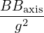
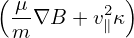
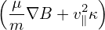
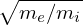
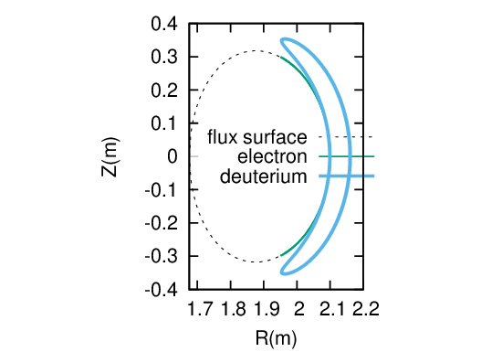

A particle whose v∥ takes the same sign during one poloidal period is called a passing particle. Otherwise, it is called a trapped particle.
For a particle with a given initial condition, can we determine whether the particle is passing or not, without numerically computing its orbit (and without assuming zero orbit width)? The answer is yes. We can do this by making use of the conservation of Pϕ, μ, and the kinetic energy 𝜀.
|
| (61) |
|
| (62) |
|
| (63) |
The critical condition for a particle being passing/trapped is that its parallel velocity v∥ is zero on the high-ï¬eld side of the midplane. (For a given magnetic surface, the midplane can be deï¬ned as the poloidal locations where ∂B∕∂𜃠= 0. For simple magnetic magnetic surfaces, usually there are two poloidal locations satisfying ∂B∕∂𜃠= 0 and we denote these two locations by 𜃠= −π (high-ï¬eld-side) and 𜃠= 0 (low-ï¬eld-side), respectively.)
Deï¬ne a dimensionless variable Λ by
 | (64) |
which is a constant of motion, and is often used as a phase space coordinate in place of μ. What does the above critical condition look like in (Pϕ,Λ) space? Using v∥ = 0, Eq. (61) is reduced to
|
| (65) |
which determines Ψ if Pϕ is given. Using v∥ = 0, expression (64) is written as
 | (66) |
Since the critical condition requires 𜃠= −π. Therefore Eq. (66) is written as
|
| (67) |
The curve in the (Pϕ,Λ) plane corresponding to the critical condition can be traced out in the following steps: 1. for a given Pϕ, use Eq. (65) to determine Ψ and hence a magnetic surface; 2. the value of B(𜃠= −π) on the magnetic surface can be determined; 3. then the value of Λ can be determined by Eq. (67).
The curve traced out by the above method for an EAST magnetic conï¬guration is plotted in Fig. 7, where the black curve corresponds to Eq. (67). The region above the black line is the trapped region, and that below it is the passing region.
Another curve similar to Eq. (67) is
|
| (68) |
This is plotted as  blue curve in Fig. 7. This curve is approximately the phase space boundary beyond which no physical particles exist. (There is actually a small region where physical particles can exit beyond the blue curve, which corresponds to the stagnation orbits. This region is usually very small, see Fig. 10).

Note that, in determine the passing trapped boundary in the (Pϕ,Λ) plane, we do not need to specify the kinetic energy 𝜀. The reason for this is as follows. Using Eqs. (62) and (63) to eliminate v∥ in Eq. (61), we obtain an equation in the (Pϕ,Λ) plane:
 | (69) |
i.e.,
|
| (70) |
where the dependence on 𜀠disappears because the critical condition requires that Pϕ − ZeΨ = 0.
Next, let us consider the phase space points with a given kinetic energy and a given spatial location, and examine how these points are distributed in the (Pϕ,Λ) plane. Note that Eq. (70) involve two free parameters Ψ and B. Let us ï¬rst ï¬xed the value of Ψ. Then there remains a free parameter B to be chosen. Two representative values of B are B(𜃠= −π) and B(𜃠= 0), corresponding to, respectively, the maximum and minimum of B on the the given magnetic surface. If the given magnetic surface corresponds to the magnetic axis, then B(𜃠= −π) and B(𜃠= 0) are identical. Figure 8 plots the three curves that correspond to the LCFS with 𜃠= −π, the LCFS with 𜃠= 0, and the magnetic axis, respectively.

Â
Â
Next, let us consider all the physically possible points in the phase space (Pϕ,Λ) for a given kinetic energy and a given spatial region. Note that Eq. (70) involves two free parameters Ψ and B, both of which are functions of spatial locations. For each value of Pϕ, scan the spatial region to ï¬nd all the values of Λ by using Eq. (70). Denote the range of Λ for a speciï¬c value of Pϕ by [Λmin : Λmax]. If Λmax < 0, then this indicates this value of Pϕ is not physically possible. If Λmax ≥ 0, then this value of Pϕ is physically possible and the physically possible range of Λ for this value of Pϕ is [0 : Λmax]. Figure 9 plots the curve Λ = Λmax(Pϕ) for Λmax ≥ 0.
Â
Putting results in Fig. 7, 8, and 9 into one ï¬gure, we obtain Fig. 10.
In the above, we plot boundary curves in the phase space (Pϕ,Λ) and get some rough ideas about possible orbits in different regions of (Pϕ,Λ) plane. Next, let us numerically examine the orbits and conï¬rm which regions are corresponding to passing/trapped/conï¬ned/lost regions.
Â

|
| (71) |
| −(Pϕ − ZeΨ)2 |
 | (72) |
 | (73) |
 | (74) |
|
| (75) |
Â
Â
An approximate condition determining whether a particle is trapped or circulating can be obtained by using the conservation of magnetic moment and kinetic energy, and assuming the guiding center orbit is along the magnetic ï¬eld line (zero-width orbit approximation, which is a proper approximation for low-energy particles whose orbit width is small, as is shown in Fig. 13).

In this approximation, the orbit remains on a magnetic surface. The critical condition for a particle to be trapped/circulating is given by
 | (76) |
where v⊥ is the perpendicular (to the magnetic ï¬eld) velocity of the particle at the location where the strength of the magnetic ï¬eld is B, Bmax is the maximum value of the magnetic ï¬eld on the same magnetic surface where the particle moves. Deï¬ne 𜃠= arccos(v∥∕v), which is the pitch angle of velocity with respect to the local magnetic ï¬eld, then Eq. (76) is written as
 | (77) |
Define
 | (78) |
then particles with 𝜃c < 𜃠< π − 𝜃c can not reach the point of the maximum magnetic ï¬eld of the same magnetic surface and thus they are trapped particles. Otherwise, they are circulating particles. In velocity space (v∥,v⊥), the trapped and circulating region are shown in Fig. 14.
Â

Â
Note that the trapped-circulating boundary given in Fig. 14 is determined based on the assumption that the guiding center motion does not deviate from a magnetic surface. However, the actual guiding center orbit does not remain on the same magnetic surface, so the above result can be wrong when applied to some particles. An example is given in Fig. 15, where the numerical results show that the particle is actually trapped but the approximate condition indicate that the particle is circulating.
Â

At a given radial location, in terms of (w,μ) coordinates, where w is the kinetic energy, the trapped passing boundary is shown in Fig. 16.

The trapped particle fraction ft is deï¬ned as the ratio of the number of trapped particles to the total number of particles. Particle distribution function (in terms of guiding-center variables) can be written as f = f(r,v,𝜃,ϕ), where r is the guiding-center position vector in conï¬guration space and (v,𝜃,ϕ) is the spherical coordinates in velocity space with 𜃠being the pitch angle and ϕ the gyro-angle. Assuming zero Larmor radius limit, then the trapped particle fraction ft is written as
where 𝜃c is the critical pitch angle deï¬ned in Sec. 5. Assume that f(r,v,𝜃,ϕ) is uniform in 𜃠and ϕ, then the integration over the 𜃠and ϕ in Eq. (79) can be performed, giving Using the deï¬nition of the critical value of the pitch angle (Eq. (78)), the above expression is written as
 | (81) |
The flux surface averaging of ft, ⟨ft⟩, is written as

|
| (82) |
In the large aspect ratio approximation and for particles that are initially on the low-ï¬eld-side of the midplane, Eq. (81) is written
 | (83) |
where 𜀠= r∕R0. This is the result given in Wessson’s book[2]. Note that this result is valid only for particles that are initially at the low-ï¬eld-side of the midplane. For particles that are initially located at the poloidal location 𝜃p, the trapped particles fraction is written
 | (84) |
For 𝜃p = π, i.e., at the high-ï¬eld-side of the midplane, ft = 0, i.e., there is no trapped particles there.
Using Eq. (84), the flux surface averaging of ft, ⟨ft⟩, is written as

Let us analytically estimate the bounce frequency of deeply trapped particles. The time evolution of the parallel velocity of a guiding center is given by Eq. (2), i.e.,
|
| (85) |
which can be approximately written as
 = − = − b ⋅∇B, b ⋅∇B,
|
which can be further written as
 | (86) |
where dl is the arc length along the magnetic ï¬eld. In a large aspect ratio tokamak with circular flux surfaces, the magnetic ï¬eld can be written approximately as
|
| (87) |
The equation of magnetic field is written
|
| (88) |
which can be written
 | (89) |
Using Eqs. (89) and (87), the parallel derivative of the magnetic ï¬eld is written as
|
| (90) |
Plug this into equation (86), then we obtain
|
| (91) |
Consider deeply trapped particles (particles are trapped in a very small region near the low-ï¬eld-side midplane), i.e., 𜃠≈ 0, then we have sin𜃠≈ 𝜃. Using this, the above equation is written as
 | (92) |
Assume the orbit is along the magnetic ï¬eld line (i.e. zero-width orbit approximation), then the equation of magnetic ï¬eld (89) is also satisï¬ed by the orbit. In the linear approximation, we have 𜃠≈ Bğœƒâˆ•(Br)l. Using this in Eq. (92), we obtain
 | (93) |
Using the deï¬nition of safety factor, q = rB0∕R0B𝜃, the above equation is written
 | (94) |
Define
 | (95) |
(for deeply trapped particles, the variation of v⊥ during one poloidal period is small, and thus can be considered constant, and thus ωb can also be considered constant), then Eq. (94) is written
 | (96) |
which indicates that the motion of a deeply trapped particle is a harmonic oscillation with an angular frequency ωb. Equations (95) and (96) agree with Eqs. (3.12.3) and (3.12.4) in Wesson’s book “Tokmaks”[2]. I have test the accuracy of formula (95) by comparing it with the numerical results, which indicates the formula can usually give a reasonable estimation of the bounce frequency (for example, 28kHz is obtained numerically while the analytical formula gives 24kHz for a not very deeply trapped orbit).
Let us analytically estimate the bounce frequency of barely trapped particles, i.e., particle satisfying the critical condition (76),
|
| (97) |
i.e., v∥ =  v, where v∥ is the parallel velocity on the low-ï¬eld-side midplane.
v, where v∥ is the parallel velocity on the low-ï¬eld-side midplane.
The distance along the magnetic ï¬eld line traveled in half an orbit is about 2πR0q, then the time needed is then given by
 | (98) |
The above approximation is rough since v∥ changes between zero and  v and we still use a constant
value,
v and we still use a constant
value,  v, in approximating it.
v, in approximating it.
Then the bounce (angular) frequency is given by
 | (99) |
which turns out to be take the same form as Eq. (95). very strange!
If neglecting the magnetic drift, a guiding-center orbit is along a magnetic ï¬eld lines, i.e., there is no derivation from the magnetic surface where a guiding center is initially located. Taking the magnetic drift into account, a guiding-center orbit will deviate from the initial magnetic surface, giving an orbit of nonzero width in the poloidal plane.
Whether a guiding-center will drift radially outward or inward from a local magnetic surface near
the midplane can be determined in the following way. First note that the zero-order approximation of
the guiding-center orbit (zero-width orbit) is either parallel or anti-parallel to the local magnetic field,
depending on the sign of v∥. Further note the direction of the magnetic drift ( B×∇B and curvature
drift) is approximately vertical, which can be either up or down, depending on the charge sign and
direction of the toroidal magnetic field. Finally, by imposing the magnetic drift on the zero-width orbit,
we can determine whether the guiding center will drift inward or outward from the local magnetic
surface. Figures 17-19 plots the drift orbits for all the possible combinations of tokamak
magnetic configurations and particle initial conditions (assume particles of positive charge, i.e.,
Z∕|Z| > 0).
B×∇B and curvature
drift) is approximately vertical, which can be either up or down, depending on the charge sign and
direction of the toroidal magnetic field. Finally, by imposing the magnetic drift on the zero-width orbit,
we can determine whether the guiding center will drift inward or outward from the local magnetic
surface. Figures 17-19 plots the drift orbits for all the possible combinations of tokamak
magnetic configurations and particle initial conditions (assume particles of positive charge, i.e.,
Z∕|Z| > 0).


Â
Figure 17 can be used to identify the direction of the bootstrap current due to the radial density gradient of trapped particles. Examining all the cases in Fig. 17, one ï¬nds that the bootstrap current is always along the direction of plasma current, and the bootstrap current direction is independent of the charge sign.
Next, consider passing particles launched from the low-ï¬eld-side midplane. Figure 18 plots all the 4 possible cases.

Next, consider a particle launched from the high ï¬eld side midplane, which must be a passing particle. Figure 19 plots all the 4 possible cases.
Â


Â
Examining the above results, one ï¬nds that reversing the direction of the toroidal magnetic ï¬eld does not change the projection of orbits on the poloidal plane, i.e., the location and shape of the poloidal orbits remain the same. However the direction of the poloidal motion is changed from clockwise (anti-clockwise) to anti-clockwise (clockwise). (This is because v∥ of a particle changes sign when the toroidal ï¬eld is reversed and thus the direction of the poloidal motion changes).
Examining the above results, we can also ï¬nd that, for particles launched from low-ï¬eld-side midplane, co-current particles have their orbits inside the magnetic surface at which the particle is initially located, and counter-current particles have their orbits outside of the magnetic surface. For particles launched from the high-ï¬eld-side midplane, the conclusion is reversed, i.e., co-current particles have their orbits outside the magnetic surface where they are initially located, and counter-current particles have their orbits inside of the magnetic surface.
These conclusions have important implications for the neutral beam injection, where orbits outside a reference magnetic surface (birth location) are more likely to be lost to the wall of the machine. If the neutral beam injection (NBI) is along the same direction of the plasma current, it is called the co-current injection. Otherwise it is called the counter-current injection. Using the above conclusions, we know that, for co-current injection, ions ionized at the low-ï¬eld-side have better conï¬nement compared with those ionized at the high-ï¬eld-side. For the counter-current injection, ions ionized at the high-ï¬eld-side have better conï¬nement compared with those ionized at the low-ï¬eld-side. Whether the overall conï¬nement of ions due to co-current injection is better or worse than that of the counter-current injection depends on the ratio of number of ions deposited at the low-ï¬eld-side to that deposited at the high-ï¬eld side. For the shine-through loss to be small, most neutral must ionize at the low-ï¬eld-side (most neutrals ionizing at the the high-ï¬eld side usually means a very high shine-through loss fraction ( >50%)). Therefore, with the assumption that most neutral beam particles are ionized on the low-ï¬eld-side, co-current injection is better than counter-current injection in terms of the ï¬rst-orbit loss.
Figure 20 and 21 compares the poloidal orbits of energetic Deuterium particles ionized at the low-ï¬eld-side midplane due to co-current and counter-current injection. The results indicate again that the counter-injected particles ionized at the low-ï¬eld-side midplane are easy to be lost from the plasma because their orbits are outside the flux surface where they are ionized, and thus are more likely to touch the ï¬rst wall.

Â

Â

Â
Â

Â
Figure 24 plots the guiding centers orbits for particles launched at the low-ï¬eld-side of the midplane with different values of the pitch angle 𝜃.

Figure 24 shows (1) the toroidal procession of deeply trapped particles is faster than that of the shallowly trapped particles and (2) the direction of the toroidal recession of the particle with 𜃠= 65∘ is different from the others.
Procession angular frequency of a trapped particles (from Porcelli’s slide):
|
| (100) |
where Ek is the kinetic energy of the particle. Equation () indicates that the procession frequency is proportional to the energy of the particle.
|
| (101) |
Compared with the results given by the numerical code, the above results seems to be roughly correct when the orbit is not near the magnetic axis.
 | (102) |
Â
Â
 = Vd ⋅∇Ψ = = Vd ⋅∇Ψ =  b × b × ⋅∇Ψ ⋅∇Ψ
|
 = =  B ×⋅∇Ψ B ×⋅∇Ψ
|
 = − = − B ×∇Ψ ⋅ B ×∇Ψ ⋅
|
using
| B = ∇Ψ ×∇ϕ + g∇ϕ |
|
| (103) |
Noting that both ∇B and κ are approximately along − direction, which is perpendicular to ∇ϕ, Eq.
(103) is written as
direction, which is perpendicular to ∇ϕ, Eq.
(103) is written as
 = − = − (g∇ϕ ×∇Ψ) ⋅ (g∇ϕ ×∇Ψ) ⋅
|
 = =  gBp ⋅ gBp ⋅
|
if
| (Ψlcfs − Ψaxis) > 0, |
then the drift from the local magnetic surface is outward, otherwise, the drift is inward.
 (Ψlcfs − Ψaxis) = (Ψlcfs − Ψaxis) =  gBp ⋅ (− gBp ⋅ (− )(Ψlcfs − Ψaxis) )(Ψlcfs − Ψaxis)
|
Examining the right-hand side of Eq. (5.8), we ï¬nd that Bp and (Ψlcfs − Ψaxis) change signs simultaneous when the toroidal plasma current Iϕ change sign, thus the direction of Bp(Ψlcfs − Ψaxis) is independent of the sign of Iϕ. Therefore the sign of the radial drift is independent of the sign of Iϕ.
The gyroradius of a particle is given by ρα = mv∕BZe, which can be further written as
 | (104) |
where Ek is the kinetic energy of the particle. For an electron with the same kinetic energy of a ion, Eq. (104) indicates that the gyroradius of the electron is smaller than that of the ion by the factor . Now comes the question: Is the width of the guiding center orbit of an electron with the same kinetic energy of a ion smaller than that of the ion? Examine the constant of motion Pϕ which is given by
|
| (105) |
The function g(Ψ)∕Ω is usually a weak function of Ψ, thus can be assumed to be a constant along a drift orbit. The orbit width can be characterized by ΔΨ, which is written
|
| (106) |
where Δv∥ is the variation range of v∥ in one poloidal period of the orbit. For trapped particles, this variation can be approximated as
 | (107) |
Using this, Eq. (106) is written as
|
| (108) |
which indicates that, for the same temperature, ΔΨ is proportional to  . (For circulating ions, the
variation of v∥ during one poloidal period can not be approximated by vt. I do not know how to
estimate the orbit width in this case).
. (For circulating ions, the
variation of v∥ during one poloidal period can not be approximated by vt. I do not know how to
estimate the orbit width in this case).
The variation of the poloidal flux ΔΨp can be approximated by
|
| (109) |
where Δr is the variation of the minor radius, Bp is the average poloidal magnetic ï¬eld on a magnetic surface. Using this and the deï¬nition ΔΨ = ΔΨp∕2π in Eq. (108), we obtain
 | (110) |
which indicates that the width of guiding-center orbits is inversely proportional to the poloidal magnetic ï¬eld Bp, rather than the toroidal magnetic ï¬eld Bt (ï¬rst got to know this conclusion from J. Wesson’s book “Science of JET”, and later wrote the above derivation).
Comparing Eq. (110) and (104), we know Δr is just the “poloidal Larmor radius†which is obtained by replacing the B in Eq. 104) by the poloidal magnetic ï¬eld Bp. It follows that the ratio between them is given by
 | (111) |
which is about q∕𜀠for large aspect-ratio tokamaks, where q is the safety factor.
The average poloidal magnetic ï¬eld on a magnetic surface near the plasma edge is approximately given by
 | (112) |
Using this, Eq. (110) is written as
|
| (113) |
which indicates that Δr is proportional to 1∕Ip. This explains why high plasma current is beneï¬cial to the conï¬nement of energetic particles (because high current corresponds to smaller orbit width and thus better conï¬nement of energetic particles which usually have larger drift orbit width than thermal particles).
A numerical example in Fig. 25 indicate, as expected, that the guiding center orbit width of an electron with the same kinetic energy of a ion is much smaller than that of the ion.
Â
 
Â
Â
Â

Â